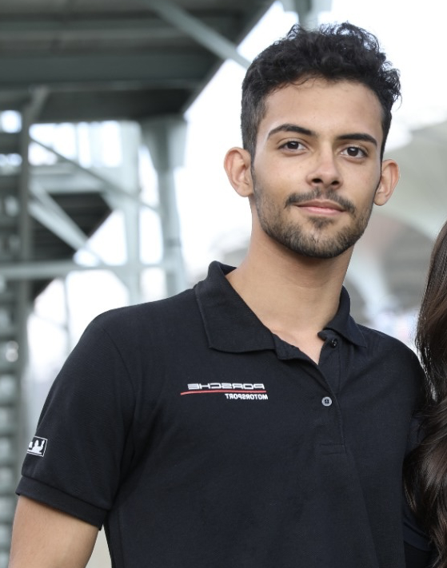

Marcos Gomes
Nasci em São Paulo em 2001 e sou graduado em Marketing. Por 4 anos atuei no setor automobilístico (Porsche Cup e Rally do Sertões) atendendo patrocinadores e parceiros das categorias, com marcas como Petrobras, Porsche, BTG Pactual e Heineken, dentre outras.
Após um tempo atuando dentro do Marketing, percebi que muitas coisas não acontecem de maneira moralmente certa e que talvez eu não quisesse seguir esse caminho e construir uma carreira. Comecei a testar algumas ferramentas de IA e me senti muito bem aprendendo e fazendo alguns projetos básicos de programação e ainda mais, me senti cada vez com mais vontade de aprender lógica, matemática e física, principalmente por não dependerem de opinião. Hoje estou estudando a fundo matemática, física e computação.
Esse site é um reflexo desse processo. Aqui documento meus objetivos e o progresso em cada uma das coisas que quero alcançar e que gosto: do aprendizado de japonês à exploração de modelos de IA, algoritmos e matemática, até a minha fé em Jesus Cristo. Escrevo também sobre saúde e performance, porque acredito que corpo e mente precisam estar bem.
No fundo, meu objetivo é simples: estudar, crescer e me tornar um homem melhor, com mais conhecimento e um coração melhor.
← voltar